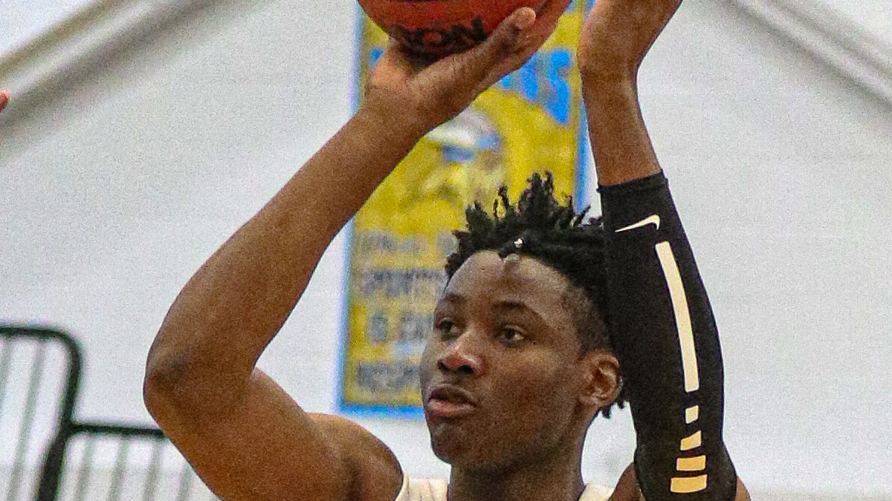

Latest in Warriors

Warriors Column
How Steve Kerr Actually Handled Jonathan Kuminga
It was never as clean as "buried him" or "stood by him." A season-long negotiation between a coach who needed wins and a young forward who needed minutes.
Read the column

Warriors Column
The Front Office Keeps Failing Steph Curry, and "He Could Leave" Doesn't Sound Crazy Anymore
Wasted draft capital, half-measure trades, and a supporting cast that keeps aging out from under him. For the first time, imagining Steph somewhere else doesn't feel absurd.
Read the column

Warriors Column
LeBron and Curry on the Same Team: What It Would Mean for Their Legacies and the NBA
LeBron is leaving the Lakers and the Warriors want him next to Steph. If it happens, it reshapes two legacies and the whole league.
Read the column

Warriors Column
The Warriors Are Out of Easy Answers, and That's the Whole Story
The dynasty bought Golden State years of benefit of the doubt. That grace period is finally over.
Read more

Warriors History
From Rick Barry to the Splash Brothers
A 1975 upset and a modern dynasty that changed basketball.
Read more

Warriors History
73-9: The Best Regular Season Ever, and Then They Added Durant
The greatest record in NBA history, a crushing Finals loss, and the superstar signing that answered it.
Read more